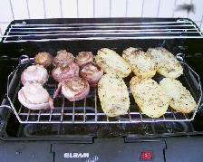

Keittokirja
Olet sivuillani kävijä.
Sisällysluettelo
- Broileriruokia
- Juomia
- Jälkiruokia
- Kakkureseptejä
- Kalaruokia
- Kastikkeita
- Keittoja
- Leipäreseptejä
- Liharuokia
- Pastaruokia
- Pullareseptejä
- Pikkuherkkuja
- Atsovärit
- seti@kauppinen.com
Sivut päivitetty 9.9.2019
Pikkuherkkuja
Keittokirjan etusivulle.
Kinkku-JuustopiirakkaKinkkupiirakat
Juustoiset Kinkkupusut
Lohikääretorttu
Pellillinen Piirakkaa
Pikkupizzat
Lehtevät Poropasteijat
Satayvartaat grillissä
Yrttiperunat ja Pekonisienet grillissä
Kinkku-juustopiirakka
- 200 g margariinia
- 4 dl juustoraastetta (Emmental)
- noin 4 dl vehnäjauhoja
- 4 rkl kylmää vettä
Täyte:
- 6 sipulia
- 6 valkosipulin kynttä
- 3 rkl öljyä
- 3 punaista paprikaa kuutioina
- 500 g palvi/keittokinkkua kuutioina
- 7 dl juustoraastetta (Emmental)
- 2 dl HYLA-vispikermaa
- 3 munaa
- mustapippuria
Uunipellillinen (40X35 cm)
Pohja:
Sekoita pehmeään rasvaan juustoraaste, vehnäjauhot ja lopuksi vesi. Levitä taikina jauhotetuin käsin leivinpaperilla vuoratun uunipellin pohjalle ja reunoille ohueksi kerrokseksi. Kuullota sipulit hetken kasarissa tilkkasessa öljyä. Lisää murskatut valkosipulinkynnet ja paprika-kuutiot ja anna hautua muutama minuutti. Sekoita kerma, munat ja mausteet. Levitä kinkkukuutiot ja hieman jäähtynyt sipuli-paprikaseos ja juustoraaste tasaisesti piirakkapohjalle. Kaada kerma-munaseos päälle ja paista 200-225°C, noin 30 minuuttia. Ensimmäiset 15 minuuttia uunin alaosassa, loppuajan keskellä uunia.
[Pikkuherkkuhakemiston alkuun]
Kinkkupiirakat
- 250 g margariinia
- 9 dl hiivaleipäjauhoja
- 1 ½ tl suolaa
- 3 ½ dl maitoa tai vettä
- 50 g hiivaa
Täyte:
- 150 g kinkkua tai 500 g savusilakoita
- 1 rkl sinappia
- purjoa
- persiljaa
- tomaattia
- emmentaalia
Tee taikina. Kuutioi kinkku, hienonna sipuli, viipaloi tomaatti ja raasta juusto. Sekoita kinkku, sinappi ja sipuli keskenään. Tee taikinasta pullia. Paina jauhoihin kastetulla juomalasin pohjalla pullan keskelle syvennys. Laita täytettä n. ruokalusikallinen per piirakka. Päälle vielä tomaatin viipale ja juustoraastetta. Paistetaan 225°C 15-20 minuuttia.
[Pikkuherkkuhakemiston alkuun]
Juustoiset kinkkupusut
-
Taikina:
- 2 dl vettä
- 25 g hiivaa
- 1 tl basilikaa
- 1 tl suolaa
- 2 dl kauraleseitä
- 3 dl vehnäjauhoja
- ½ dl öljyä
Täyte:
- 170 g (8 viipaletta)
- palvikinkkua
Liuota hiiva haaleaan veteen. Sekoita mukaan mausteet ja leseet. Alusta taikina vehnäjauhoilla ja lorauta loppuvaiheessa mukaan myös öljy. Anna taikinan kohota. Jaa muotoilemasi taikinatanko 8 osaan ja pyöritä ne palloiksi. Kauli pallot litteiksi, kinkkuviipaleen kokoisiksi levyiksi. Pane jokaiselle letulle kinkkuviipale ja käännä puolikuuksi. Älä nipistele. Anna kohota, voitele munalla, ripottele pinnalle juustoraastetta. Uuni 200°C, noin 12 minuuttia.
[Pikkuherkkuhakemiston alkuun]
Lohikääretorttu
-
Pohja:
- 50 g voita tai margariinia
- 1 dl vehnäjauhoja
- 2 ½ dl maitoa
- 2 dl kermaa
- ½ tl yrttisuolaa
- ½ tl sitruunapippuria
- ½ tl leivinjauhetta
- 3 keltuaista
- 3 valkuaista
Täyte:
- 200 g tuorejuustoa
- 150 g kylmäsavu-kirjolohta
- 1-2 valkosipulinkynttä
- ½ dl tillisilppua
- ½ dl ruohosipulia
- ½ tl sitruunapippuria
- 1 rkl sitruunamehua
- 1-1½ dl smetanaa
Sulata rasva kattilassa. Kiehauta siinä vehnäjauhot ja lisää maito vähitellen. Sekoittele joukkoon myös kerma. Anna seoksen jäähtyä. Lisää mausteet, leivinjauhe ja keltuaiset. Vatkaa valkuaiset kovaksi vaahdoksi ja nostele joukkoon varovasti. Kaada taikina huolella öljytylle leivinpaperille pellin päälle ja paista 180°C, noin 25 minuuttia. Kumoa levy puhtaan pyyheliinan päälle, irrota paperi ja anna jäähtyä. Leikkaa kala pieniksi kuutioiksi ja sekoita se sekä yrttisilput ja mausteet tuorejuustoon. Vatkaa smetana vaahdoksi ja sekoita täytteen joukkoon. Levitä täyte jäähtyneelle pohjalevylle ja kääri rullalle tavallisen kääretortun tapaan.
[Pikkuherkkuhakemiston alkuun]
PEellillinen piirakkaa
- noin 2½ dl perunasosetta
- 250 g voita
- 5 dl vehnäjauhoja
- 3 tl leivinjauhetta
- 2 dl vettä
Täyte:
- noin 400 g kinkkua, leikkelettä, kirjolohta tms.
- 1 purjo
- 4 munaa
- 2 dl kermaa
- 150 g juustoraastetta
- 200 g sinihomejuustoa
Sekoita leivinjauhe jauhoihin. Sekoita pohjataikina-aineet keskenään. Painele taikina leivinpaperilla peitellylle uunipellille ja kypsennä 225°C, 15 minuuttia. Silppua kinkku ja sipuli. Sekoita munat + kerma. Lisää muut aineet. Kaada seos piirakkapohjalle ja jatka kypsentämistä 200°C, vielä noin 20 minuuttia.
[Pikkuherkkuhakemiston alkuun]
Pikkupizzat
- 3 dl vettä
- ½ tl suolaa
- ½ dl juoksevaa Sunnuntai-margariinia
- 2 tl Sunnuntai -kuivahiivaa
- n. 6 dl vehnäjauhoja
- 250 g metwurstia tai salamia
- n. 1 ½ dl chiliketsuppia (tai tavallista ketsuppia ja Heinz Chili Sauce 50/50)
- 6-7 tomaattia
- 2-3 rkl pizzamaustetta
- 200 g juustoraastetta
Lisää reilusti kädenlämpöiseen veteen suola, margariini sekä jauhot, joihin kuivahiiva on sekoitettu. Alusta taikina tasaiseksi. Anna kohota leivinliinan alla. Kauli taikina ohueksi levyksi ja ota siitä muotilla tai juomalasilla (halk. 4-5 cm) pyöreitä pohjia. Anna kohota. Levitä pohjille chiliketsuppia, sitten suikaloitua metwurstia, tomaattiviipale, pizzamaustetta ja pinnalle juustoraastetta. Paista 250°C 10-12 minuuttia.
[Pikkuherkkuhakemiston alkuun]
Lehtevät poropasteijat
- 1 pkt lehti- tai voitaikinaa
- munaa voiteluun
- sesaminsiemeniä ja rosepippuria
Täyte:
- 3 prk (á 100 g) valkosipulituorejuustoa
- 1 dl ruohosipulisilppua
- 150 g savuporoa
Kauli taikina n. ½ cm paksuiseksi levyksi. Ota siitä pikkuleipämuotilla paloja ja nosta ne pellille leivinpaperin päälle. Voitele leivonnaiset munalla ja ripottele pinnalle sesaminsiemeniä ja rosepippuria. Paista 225°C n.10 minuuttia. Notkista tuorejuusto, lisää mukaan tarvittaessa tilkka maitoa. Hienonna ruohosipuli sekä savuporo ja sekoita ne juustoon. Halkaise leivonnaiset ja levitä täytettä väliin.
[Pikkuherkkuhakemiston alkuun]

{kind=link}
Yrttiperunat ja pekonisienet grillissä
-
Yrttiperunat:
- 1-3 Nicola -perunaa per ruokailija
- 1-2 valkosipulin kynttä per 6 perunaa
- ruokaöljyä
- Herbes de Provence yrttiseosta
- suolaa
Pese perunat huolella ja keitä ne lähes kypsiksi. Älä kuori. Anna perunoiden jäähtyä. Sekoita öljystä, puristetuista valkosipulin kynsistä ja yrttiseoksesta marinadi. Halkaise perunat pitkittäin, lado ne kannelliseen astiaan ja kaada maustettu öljy niiden päälle. Anna maustua yön yli jääkaapissa välillä käännellen. Ota perunat huoneenlämpöön paria tuntia ennen grillausta. Grillaa kunnes perunoissa on rapea pinta. Mausta suolalla.
- 1 ltk tuoreita herkkusieniä
- 1 pss pekonia
Pekonisienet:
Leikkaa pekonipaketti keskeltä kahtia. Pese herkkusienet. Venytä lyhyet ja leveät pekonisuikaleet tiukalle herkkusienten ympärille. Grillaa aktiivisesti käännellen etteivät pekonit luiskahda sienten päältä. Grillaa kunnes pekoni on rapeaa ja sienistä on ylimääräinen vesi valunut pois.
[Pikkuherkkuhakemiston alkuun]
Satayvartaat grillissä
- 500 g porsaan ulkofileetä
- 4 valkosipulin kynttä
- 1 rkl sitruunamehua
- 1 rkl seesamiöljyä
- 1 tl suolaa
- mustapippuria
- varrastikkuja
Leikkaa liha sormen kokoisiksi suikaleiksi. Kuori ja hienonna valkosipulinkynnet. Sekoita valkosipuli, sitruunamehu, seesamiöljy, suola ja mustapippuri kastikkeeksi ja marinoi siinä lihaa muutama tunti jääkaapissa. Kostuta varrastikut, jotta ne eivät syty palamaan. Pistele liha pitkittäin varrastikkuihin. Paista kypsiksi.
[Pikkuherkkuhakemiston alkuun]